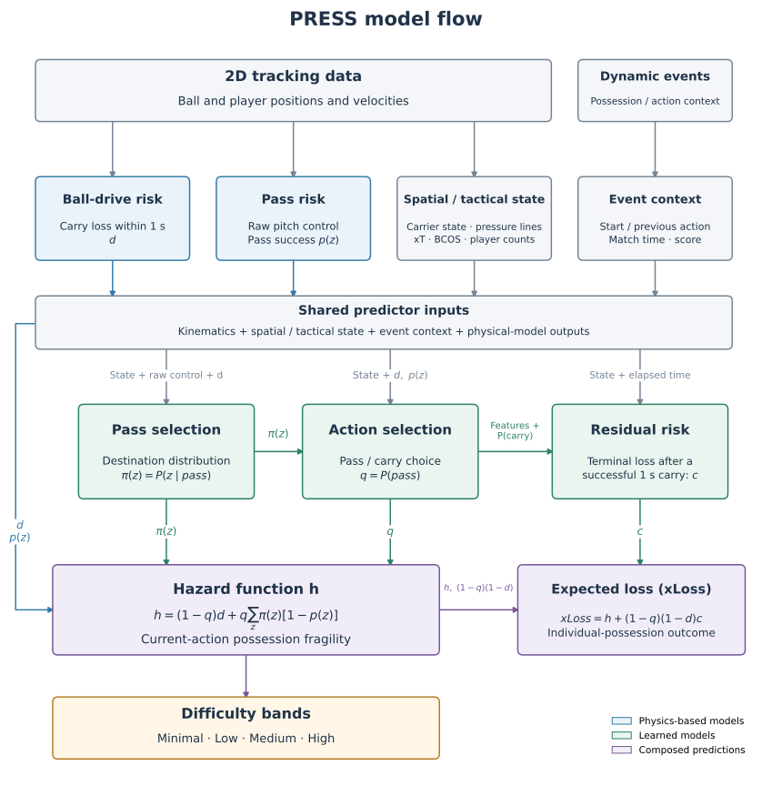

PRESS
Possession Risk Estimate from Spatio-temporal State
PRESS is an independent, work-in-progress research and software framework for estimating possession-loss risk in football from tracking data. It combines physics-informed models of passing and ball carrying with learned decision-making policies to quantify possession vulnerability at complementary horizons: the risk of losing team possession during the next action and the probability that the current ball carrier’s individual possession eventually ends in a loss. A primary application is the evaluation of player performance under defensive pressure, with broader uses in possession and tactical analysis.
Browse the project
Models
Risk profiles and reports
Guides
- Datasets, installation and preprocessing
- Possession segmentation and context
- Use on a match
- Use with other providers: data requirements and preparation, then the Bundesliga example
Benchmarks
Spatial features: accessibility and value
Reference
Motivation
PRESS investigates how the current game state shapes the risk of losing possession in football, with particular interest in the difficulty players face under defensive pressure. Player performance is evaluated in relation to that difficulty by comparing observed possession outcomes with model-based expectations.
As an exploratory research and software development project, PRESS draws on pitch control and possession valuation (Spearman et al. 2017; Fernandez, Bornn, and Cervone 2021). Following the modular philosophy of Expected Possession Value (EPV), it separates action selection, pass destination choice, and the success or loss probability of each action. PRESS examines this decomposition from a possession-retention perspective and translates its components into reusable software, transparent implementations, and reproducible analyses of real tracking and event data.
The project also explores alternative formulations for individual EPV components. One example is a physics-based model of ball-drive success. Building on the arrival formulation of Bekkers (Bekkers 2025) and the pitch-control framework of Spearman (Spearman et al. 2017), PRESS investigates whether the relative movement and interception capabilities of defenders and the ball carrier can support a probabilistic model of retaining control during a ball drive. This offers a physically motivated alternative to black-box models of ball-drive success based on spatial and contextual features.
For action and pass destination selection, PRESS experiments with tree-based discrete-choice models suited to decision tasks. In particular, we adopted a multinomial gradient-boosted tree model for pass destination. These choices are driven by player decisions, and the models can incorporate features derived from physical components. One example is the open space available to the carrier, measured by Ball Carrier Open Space (BCOS), a concept introduced in (Bandara et al. 2025) that PRESS formalizes within a competing-risks framework. BCOS describes the area of the pitch the carrier can reach before any opponent. It captures potentially controlled space over a horizon longer than the one-second ball-drive risk model, making it a candidate predictor of action choice and terminal possession loss alongside tactical and contextual features. This hybrid strategy combines physical models of action feasibility and risk with learned tree-based models of player decisions.
The components yield two complementary measures. Evaluated along observed possessions, the possession-loss hazard supports retrospective risk profiles, survival-based descriptions of possession difficulty, and player-performance reports. xLoss provides a prospective measure, with potential applications in tactical analysis, and PRESS computes it modularly as the hazard plus a residual-risk term. Both measures are defined from the current game state.
The framework is developed on a publicly available ten-match sample, which supports end-to-end modelling and reproducible evaluation on real game situations while limiting the generalizability of fitted models and empirical findings. The modelling choices favour parsimonious models, in line with this sample and the project’s exploratory scope; their assumptions and implications are discussed in Modelling choices.
Framework overview
Possession as a Markov decision process
PRESS adopts a Markov Decision Process (MDP) perspective on football possession, following the modular approach to Expected Possession Value (EPV) developed by Fernández, Bornn and Cervone (Fernandez, Bornn, and Cervone 2021). In this formulation, possession is viewed as a sequence of decisions and actions undertaken by successive ball carriers, where each action has an uncertain outcome.
This perspective provides a convenient way to separate three fundamental aspects of possession: which actions are available, how likely they are to succeed, and how players choose among them. This decomposition is central to the EPV framework, where individual components can be estimated separately and subsequently combined to evaluate possession outcomes.
PRESS builds on this modular decomposition to estimate possession-loss risk. Let \(s_t\) denote the game state at time \(t\), represented by the positions and movements of players and the ball, together with relevant tactical and contextual information.
We consider two canonical on-ball actions: ball drive and pass. A ball drive corresponds to retaining control of the ball for a conventional interval of one second, whereas a pass represents an attempt to transfer the ball to a selected destination while maintaining team possession. Unlike a ball drive, a pass has a variable duration, determined by the execution and completion of the attempt.
The framework combines four probabilistic components:
Ball-drive risk: the probability of losing possession during the one-second ball drive,
\[ d_t=P(\mathrm{loss}\mid s_t,A_t=\mathrm{drive}). \]
Pass probability: the probability of retaining team possession through a pass towards destination \(j\),
\[ p_{j,t}=P(\mathrm{success}\mid s_t,A_t=\mathrm{pass},J_t=j). \]
Pass selection: the probability of choosing destination \(j\), conditional on attempting a pass,
\[ \pi_{j,t}=P(J_t=j\mid s_t,A_t=\mathrm{pass}), \qquad \sum_j\pi_{j,t}=1. \]
Action selection: the probability of choosing a pass over a ball drive,
\[ q_t=P(A_t=\mathrm{pass}\mid s_t). \]
The pass-success and ball-drive components characterize the physical difficulty of executing potential actions, while action and destination selection describe how players are expected to choose among the available alternatives. The latter are learned from observed behaviour using tree-based models, incorporating features derived from the physics-based components alongside tactical and contextual information.

The diagram shows how the individual model components are combined to estimate possession-loss hazard and xLoss.
Possession-loss hazard
The canonical actions introduced above provide a conventional way to segment possession into a discrete sequence of on-ball action opportunities (see Possession segmentation and context). Each opportunity is associated with a predefined checkpoint at which the current game state is evaluated. A successful ball drive allows the same player to continue controlling the ball, whereas a successful pass transfers control to a teammate. Since the event of interest is the loss of team possession, a completed pass does not terminate the process: the sequence continues across successive ball carriers until possession is lost.
This conventional segmentation allows possession to be represented as a discrete survival process. Let \(T\) denote the number of canonical on-ball actions until team possession is lost, and let \(s_n\) represent the game state at the \(n\)-th checkpoint. The probability of losing possession during the next action, conditional on having retained it up to the current opportunity, defines the discrete hazard:
\[ \boxed{ h_n=P(T=n+1\mid T>n,s_n). } \] PRESS estimates this probability by marginalizing action-specific risks over the decision-making policy learned from observed play, including the choice between carrying and passing and the distribution of pass destinations. The estimate depends on the current state only, whatever action the player actually chose:
\[ \boxed{ h(s_t)=(1-q_t)d_t+ q_t\sum_j\pi_{j,t}(1-p_{j,t}). } \] The first term represents the contribution of ball-drive risk, while the second averages pass-failure risk across potential destinations. Together, they quantify the vulnerability of team possession in the current state.
Importantly, the possession segmentation provides the discrete interpretation of the hazard, while \(h(s_t)\) can be computed at any reliable state \(s_t\), including frames between canonical checkpoints, to monitor possession difficulty throughout play. At every frame it remains a per-action quantity: the probability of losing possession during the next canonical action, equal to \(h_n\) when \(s_t\) is the state at checkpoint \(n\). Intermediate evaluations add observations of risk without adding canonical actions.
Pressure intensity and possession difficulty
Defensive pressure is a collective phenomenon. Defenders can restrict the space available to the ball carrier, close passing lanes, reduce the accessibility of teammates, and force the attacking team towards less favourable decisions. Its impact therefore depends not only on the proximity of individual defenders but also on the opportunities available to the player in possession. Related work studies pressure through pressure maps (Gu et al. 2024), minimum arrival time (Narizuka et al. 2026), ball retention under high pressure (Poli, Ravenel, and Besson 2024) and turnover models (Peters et al. 2024), and models the actions of the ball carrier through action rates (Dick and Brefeld 2023) and EPV components (Fernandez, Bornn, and Cervone 2021).
The possession-loss hazard captures these interacting effects and provides an operational measure of possession difficulty under defensive pressure.
The segmentation into canonical actions also supports a survival analysis interpretation. Under a hypothetical constant hazard, possession half-life is the number of actions required for the probability of retaining possession to fall to \(50\%\). Higher hazard therefore corresponds to shorter reference half-life. This measures current difficulty; risk evolves throughout play.
Evaluating the hazard at successive canonical checkpoints along an observed possession defines a retrospective survival curve, \(S_n=\prod_{k=0}^{n-1}(1-h(s_k))\), with \(S_0=1\). This summarizes the cumulative possession-loss risk encountered along the observed sequence of game states.
Following SkillCorner’s approach of classifying defensive pressure into bands (SkillCorner 2026), PRESS defines possession-difficulty bands from the possession-loss hazard, using this survival-based interpretation; their construction and thresholds are described in the hazard and risk bands vignette.
A primary application is the retrospective evaluation of how individual players retain possession under pressure. Hazard trajectories reveal recurring patterns, such as escaping pressure (initially high risk followed by a decline) or drawing pressure (initially low risk followed by an increase). These patterns are inspired by the pressure metrics of SkillCorner (SkillCorner 2026) and are defined here from the hazard; they can help characterize individual playing styles. Comparing observed outcomes with model-based expectations across difficulty levels provides a complementary assessment of player performance. These applications are illustrated in the case studies vignette.
From possession-loss hazard to xLoss
The possession-loss hazard measures the probability of losing team possession during the next on-ball action. A complementary perspective concerns the eventual outcome of the current ball carrier’s individual possession, which may extend beyond the next action (SkillCorner 2025, 52). PRESS computes this object modularly, by composing the hazard with a residual-risk component.
The distinction arises primarily from ball carrying. A successful one-second drive preserves individual possession but does not determine its eventual outcome: the player may continue carrying the ball, attempt a pass, or lose control later. Conversely, a successful pass terminates the current player’s individual possession without causing a loss of team possession.
To account for this longer horizon, PRESS adds a residual-risk component. Conceptually, the eventual outcome of an individual possession is an absorption probability, which would follow from iterating the evaluation over successive states, each with its own action choice and loss risk, until the possession ends. Since the space of possible continuations is unbounded, the residual-risk component approximates this quantity directly from observed outcomes, as the probability that the current individual possession eventually terminates in a loss, conditional on successfully completing the initial ball drive:
\[ r_t= P(\mathrm{eventual\ individual\ possession\ loss} \mid s_t,\mathrm{successful\ drive}). \]
The probability of eventual loss through the ball-drive branch therefore combines the risk of losing the ball during the initial drive with the residual risk following its successful completion:
\[ d_t+(1-d_t)r_t. \]
Combining the two action branches gives the expected loss probability:
\[ \boxed{ \mathrm{xLoss}(s_t)= (1-q_t)\left[d_t+(1-d_t)r_t\right] + q_t\sum_j\pi_{j,t}(1-p_{j,t}). } \]
Equivalently,
\[ \boxed{ \mathrm{xLoss}(s_t)=h(s_t)+(1-q_t)(1-d_t)r_t. } \]
The additional term represents the probability contribution from an initially successful drive followed by an eventual loss of individual possession. Unlike the hazard, which concerns the next action, xLoss incorporates this longer-horizon risk through the residual-risk component, without explicitly modelling the subsequent sequence of decisions.
Together, \(h(s_t)\) and \(\mathrm{xLoss}(s_t)\) provide complementary state-conditioned measures: hazard supports retrospective analysis of possession difficulty, while xLoss supports prospective assessment of individual possession outcomes.
Vignettes and benchmarks
Each component is described in a dedicated vignette, covering its mathematical formulation, input variables, implementation, and application to real match situations using tracking and event data.
Each modelling task is also accompanied by a dedicated benchmark page, where its predictive performance is evaluated and compared, whenever possible, with results reported in the academic literature for similar tasks. The main references for these comparisons are Fernández, Bornn and Cervone (Fernandez, Bornn, and Cervone 2019) and Stalpaert et al. (Stalpaert 2022). These benchmarks provide a basis for assessing the performance of individual components in relation to existing approaches, while accounting for differences in datasets, modelling assumptions, and evaluation protocols.
The case studies and player-level reports illustrate these applications in real match situations.
Data and reproducibility
PRESS uses ten matches from the publicly available SkillCorner A-League sample as its primary source of tracking and event data. The analyses and examples are based on real match situations, allowing the framework to evaluate possession vulnerability in the context of observed player movements, defensive configurations, and on-ball decisions.
Raw tracking files are not redistributed with the package. Analyses and notebooks can be reproduced using the pinned Python environment and the corresponding match data. Instructions for obtaining and preparing the dataset are provided in the dataset and preprocessing guide, alongside installation and reproducibility information in the repository README.
Start using the package
To get started with PRESS, follow the user guide or explore the match-use example, which illustrates the analysis of real match situations using tracking and event data.
The workflow begins by loading and validating a match, then selecting team possessions, individual frames, and canonical action checkpoints. The relevant model components can subsequently be evaluated to estimate possession vulnerability and generate risk profiles.
For implementation details, consult the Python API reference and scientific solver reference. The project roadmap outlines ongoing development and planned extensions.